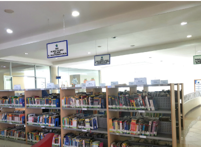

Perpustakaan Proklamator Bung Hatta merupakan perpustakaan yang berada di Kota Bukittinggi, Sumatera Barat. Perpustakaan ini menyediakan berbagai koleksi dan layanan informasi yang dapat dimanfaatkan oleh masyarakat.
Gedung Perpustakaan Proklamator Bung Hatta di Kota Bukittinggi.

Rak buku digunakan untuk menyimpan dan menata berbagai koleksi bahan pustaka.
Ruang Layanan digunakan untuk membantu pemustaka dalam memperoleh pelayanan perpustakaan.